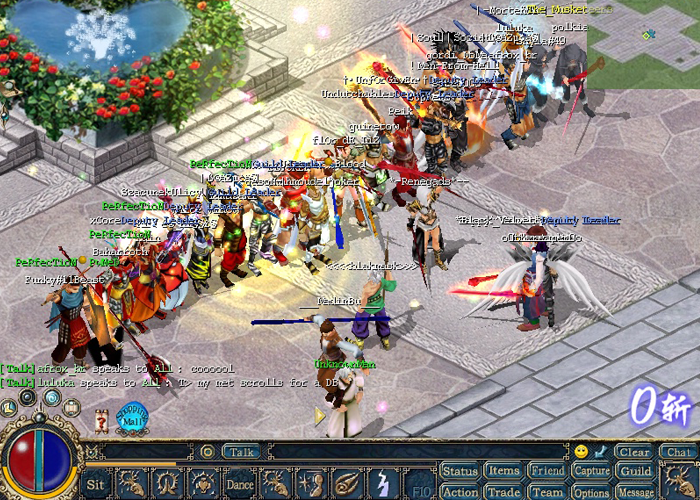
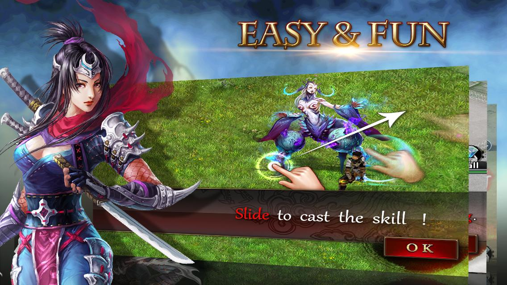
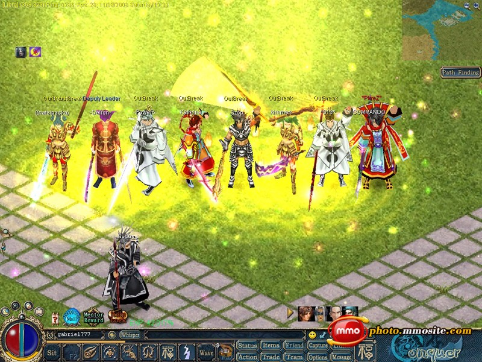

The Hard Truth About Your Conquer.io Runs
You keep dying in the first two minutes. You stare at the screen, watching your cube get wiped out for the tenth time, blaming lag or cheap shots. Stop lying to yourself. I have over 2000 hours in Conquer.io. I have seen every pathetic mistake you are making right now. This game is not about luck. It is about discipline, spatial awareness, and ruthlessness. You are treating the map like a playground when you should be treating it like a warzone. Read every single word below. Fix your habits. Or quit the game and let the real players take your space.

| # | Mistake | Quick Fix |
|---|---|---|
| 1 | You Draw Massive, Greedy Loops | Keep your loops tight and incredibly small |
| 2 | You Cross Your Own Trail | Commit to your path and control your panic |
| 3 | You Ignore the Screen Edges | Shift your focus to the perimeter |
| 4 | You Patrol the Open Map | Once you secure a large zone, your job changes from expansion to defense |
| 5 | You Chase Enemies in the Open | Never chase a retreating enemy into the open map |
You Draw Massive, Greedy Loops
You leave your safe zone to claim half the map in one single trip. You draw a massive, winding trail across the open white space, thinking the huge risk is finally worth the massive reward. You want to dominate the board instantly, so you stretch your cube far away from your home base. You ignore the empty space around you and focus only on the colored blocks you want to steal. This greedy mindset blinds you to the actual danger.
Your unfinished trail is a glowing target for everyone on the server. The longer you stay outside your base, the more time opponents have to spot your tail and slice it. One quick cut from a rival, and your entire run is wiped out instantly. You lose all that progress and die for nothing. The game mechanics strictly punish overextension. A long tail is just a free kill waiting to happen for anyone watching the map.
Keep your loops tight and incredibly small. Only expand a few squares at a time. Dash out, make a quick right angle, and sprint straight back to your colored zone. Short trails give enemies almost zero time to react and cut you off. Greed kills. Play safe, secure small chunks, and repeat. Your territory will grow steadily without exposing your tail to unnecessary risks. Stop trying to be a hero and start playing like a survivor.
You Cross Your Own Trail
You panic when an enemy approaches your open trail. Instead of rushing back to your base or cutting them off, you frantically steer your cube in a tight circle. You try to dodge their incoming path, but you accidentally cross your own colored line before you can reconnect to your territory. This happens because you lose track of your own tail while staring at the enemy, resulting in an instant, self-inflicted death.
The game's core snake-style mechanic punishes this instantly. If your trail intersects itself before you reconnect to your base, you commit suicide. You just handed the enemy a free kill without them lifting a single finger. You panicked, lost your spatial awareness, and eliminated yourself. This is the most embarrassing way to die in the game. You gave them the victory because you could not handle the pressure of a close encounter.
Commit to your path and control your panic. If an enemy is near your tail, your only two options are to sprint straight back to base or aggressively cut their trail. Never double back over your own line. Keep your movements predictable and linear. If you must turn, make wide, sweeping arcs that leave plenty of clearance between your old trail and your new path. Master your turning radius to avoid clipping your own paint.

You Ignore the Screen Edges
You stare directly at your own cube, completely ignoring the rest of the map. You do not notice an enemy cube drifting right next to your territory. You are so focused on your immediate surroundings that you fail to see a rival drawing a trail right in front of your unprotected borders. This extreme tunnel vision leaves your flanks completely blind to incoming threats, allowing enemies to walk right up to your base.
By the time you finally look up, they have already sealed their loop and stolen a massive chunk of your hard-earned zone. Worse, if they are still outside, you missed the perfect window to slice their tail and eliminate them. You lose territory and miss kills simply because you lack basic map awareness. Your ignorance allows rivals to eat your land while you stare blankly at your own cube, completely unaware of the theft.
Shift your focus to the perimeter. Watch the edges of your screen for rival colors creeping toward your borders. The moment you see an enemy trail near your zone, intercept it. Cut their line before they can connect to their base. You must constantly scan the edges of your vision to defend your land and hunt down careless opponents. Stop staring at your cube and start watching the entire battlefield to maintain total control.
You Patrol the Open Map
Once your territory gets big, you get bored. You start wandering deep into the blank white map, looking for fights, completely abandoning the borders of your newly expanded zone. You think you are invincible because you own a massive block of color, so you roam the open space looking for easy kills. This reckless roaming leaves your massive empire completely undefended and vulnerable to coordinated attacks from multiple angles.
While you are out playing hero in the open, three different enemies are quietly biting into your unprotected borders. You lose massive amounts of territory because you were not there to defend it or cut their trails. Your massive zone becomes a giant target, and your absence guarantees that rivals will carve it up while you chase ghosts. You shrink rapidly because you abandoned your post, proving that holding land is harder than taking it.
Once you secure a large zone, your job changes from expansion to defense. Hug the perimeter of your colored territory. Patrol the borders and aggressively slice the tails of anyone foolish enough to push into your space. A large territory is useless if you do not actively defend its edges. Stay close to your paint and punish intruders. Guard your borders like your life depends on it, because in this game, it absolutely does.
You Chase Enemies in the Open
You see an enemy running away from you in the open map. You get tunnel vision and chase them far away from your own safe zone, drawing a long, unprotected trail behind you. You want the satisfaction of eliminating them, so you follow them deep into the blank white space. This obsessive pursuit blinds you to the fact that you are leaving your safe zone and exposing your tail to the entire server.
You are leading them right into a trap. By chasing them far from your base, you extend your tail into the middle of nowhere. A third player watching this chase will effortlessly slice your long tail, killing you while the enemy escapes. You become the victim of your own aggression, dying far from home. Your reckless pursuit hands a free victory to a third party who was just waiting for you to make a mistake.
Never chase a retreating enemy into the open map. Let them go. Only engage when an enemy is pushing into your territory or when you can guarantee a quick cut near your own safe zone. Protect your trail at all times. If they run into the open, let them run. Your survival is always more important than a reckless kill. Stay disciplined and only fight on your own terms, keeping your tail short and your kills clean.

The Bottom Line
The number one thing that separates winners from losers in Conquer.io is trail discipline. Losers draw long, greedy lines and chase enemies into the open, treating the game like a mindless action shooter. Winners draw tight, calculated loops, guard their borders, and slice careless tails. You do not win by taking the most risks. You win by making the fewest mistakes. Stop overextending. Stop crossing your own paint. Watch your screen edges. Play smart, stay close to your base, and watch your territory grow while your opponents wipe themselves out. Now get back in the game and claim your space.